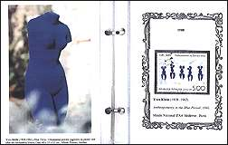
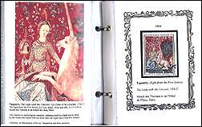
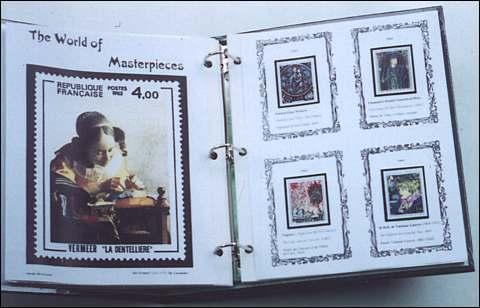

| Revised: 02/11/01. Copyright © 2000 - 2001 by Victor Manta, Switzerland, and Francis Kolarits, USA. All rights reserved in all countries. |
|
|
 |
 |
|
| ART TRIVIA | ||
| QUIZ FOR PHILATELISTS | ||
The page of Francis Kolarits, USA
1.
What is common among the three painters: Raphael, van Gogh, and
Toulouse-Lautrec ?
2. The world's longest tapestry is 338 feet long. What is the name of this
masterpiece?
3. One of the world's oldest known sculpture is about 25,000 years. How
tall is it ?: A. taller than 2 feet, B. 1 foot, C. 6 inches, D. less then
2 inches.
4. The 12th century Church of Saint-Savin is called by many as the
Romanesque Sistine Chapel. It is famous because of its: A. architecture,
B. sculpture, C. paintings, D. all of the three.
5. Who was this artist? His painting of a horse with his rider brought
him unusual fame when he was 19, but it was the horse who caused his death
at the age of 33.
6. Constance Mayer (1775-1821), an artist herself, cut her throat with the
master's razor, Jeanne Hébuterne (1898-1920), committed suicide the day
after the artist's death, Camille Claudel (1864-1943), an accomplished
sculptress, became insane of despair. Who were the men, loved by those
women artists?
7. Once upon a time there were three young brothers, they worked and died
together in 1416. Their work left unfinished. In spite of that it is
usually referred to as "the king of the manuscript
illumination". Who were these three great artists?
8.
There are only 36 known canvases from this celebrated Baroque artist. One
of the smallest of them can be seen in the Louvre. It seems that the size
did not bother neither Renoir or Dali, who were fascinated by this
picture. What is its name?
9. Perhaps he was the greatest non-Italian artist of the Renaissance. He
painted three self portraits which are displayed in the following
museums: Louvre (Paris), Prado (Madrid), and Alte Pinakothek (Munich). Who
was this great artist?
10. He wanted to be a painter but ended as a designer and brought vivacity
into the French Typography. You have just read one of his many creations
the "Mistral" script based on his own handwriting.
Who was this gifted man?
| Answers
You can find answers to all
this questions and enter the wonderful world of arts by collecting
the French Art Series and by using "The World of
Masterpieces". For more information please contact by e-mail: Francis Kolarits (-: srewsna eht era ereH |
 |
Links:
| Revised: 02/11/01. Copyright © 2000 - 2001 by Victor Manta, Switzerland, and Francis Kolarits, USA. All rights reserved in all countries. |
|
|